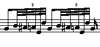

In this chapter we return to consider several more advanced topics
related to the **kern representation.
Dotted durations are indicated by adding the period character (.)
immediately following the numerical value, hence "8."
signifies a dotted eighth-note and "2.." signifies
a doubly dotted half-note.
Any number of augmentation dots may follow the duration integer.
Triplet and other irregular durations are represented using the same
reciprocal logic.
Consider, for example, the quarter-note triplet duration.
Three quarter triplets occur in the time of four quarters
or one whole duration.
If we divide a whole duration ("1") into three equal parts,
each part has a duration of one-third.
The corresponding reciprocal integer for 1/3 is 3,
hence **kern represents a quarter-note triplet as
a "third-note", 3.
Similarly, eighth-note triplets are represented by the integer 6
and sixteenth-note triplets are represented by the integer 12.
Eighth-note quintuplets (5 in the time of 4) will be represented by the
value 10 (a half duration divided by 5).
Another set of tuplets appears in the last beat of the second measure.
In this case, five notes are played in the time of a quarter,
hence the reciprocal durations are 5 x 4 or 20th notes.
In the last measure of the example, five notes are played in the
time of an eighth-note: 5 x 8 or 40th notes.
Note that the 40th notes are half the duration of the 20th notes
in the previous measure.
Other noteworthy observations regarding example 6.1:
notice the tenuto markings (~) on the first two notes
of the second measure.
Also notice that the duration of the last note in the example is
indeterminate.
It could be a sixteenth note, a quintuplet sixteenth, or
some other duration.
Grace Notes, Gruppettos and Appoggiaturas
The **kern representation also allows for the encoding
of grace notes (acciaccaturas, non-canonical gruppettos,
and appoggiaturas.
Depending on the expected analytic application, one way to handle these
notational devices is to encode the notes according to the manner in which
they are typically performed.
Alternatively, since the component notes of an expanded ornament are
viewed as embellishments that hold potentially less analytic status,
a special designation for these notes can be useful
for certain types of studies.
Grace notes
(acciaccaturas) are visually rendered as miniature notes
with a slash drawn through the stem.
In the **kern representation these notes are treated
as "durationless" notes and
are designated by the lower-case letter "q".
Hence, the token "G#q" denotes a G#3 grace note
with an indeterminate duration.
Non-canonical
gruppettos
are miniature (non-cue) notes (typically appearing in groups)
whose stems do not contain a slash, and whose notated durations
cause the total notated duration for the measure
to exceed the prevailing meter.
These gruppetto notes are encoded as notes retaining their notated
durations, but all such notes are also designated by
the upper-case letter "Q".
Hence, a miniature sixteenth-note middle C would be encoded
as "16cQ".
When processed by various tools in the Humdrum Toolkit, these notes
may be treated as equivalent to their notated durations.
Alternatively, in some types of processing these notes may be discarded.
For example, the Humdrum
timebase
command (described in
Chapter 13)
eliminates acciaccaturas and gruppetto notes.
Note that data records containing acciaccaturas or gruppetto
notes must
not
also include normal notes.
In the case of
appoggiaturas,
**kern requires that they be encoded as performed.
An appropriate duration is assigned to the appoggiatura
according to common performance practice.
The duration of the subsequent note is reduced by a corresponding amount.
The status of the two notes forming the appoggiatura is nevertheless marked.
The appoggiatura note itself is designated by the upper-case
letter "P",
whereas the subsequent note (whose notated duration has been shortened)
is designated by the lower-case letter "p".
Multiple Stops
In the **kern representation, spines typically represent
individual musical parts or voices.
Occasionally, a nominally single "part" contains more
than one concurrent note.
A good example of such a situation occurs
when a violin plays a double stop.
The **kern representation provides three different ways of representing
such situations: (1) multiple stops, (2) spine splitting and rejoining,
and (3) introduction and retiring of a momentary "part".
Each of these representation methods captures a different way
of interpreting the music.
The best representation will depend on the editorial or processing goal.
First we will consider the generic Humdrum
subtoken.
A data token becomes a multiple stop when two or more subtokens
are present, separated by single spaces.
By way of illustration, the following **kern data represents a
scale played in ascending thirds:
**kern |
| 4c 4e |
| 8d 8f |
| 8e 8g |
| 8f 8a |
| 8g 8b |
| 8a 8cc |
| 8b 8dd |
| 4cc 4ee |
| *- |
An important restriction for multiple stops in the **kern
representation is that they must encode notes of the same duration.
In the above example, the left and right components of the multiple
stop always share the same duration.
(Note that this is a restriction of multiple stops in the **kern
representation only, and does not necessarily apply to other
Humdrum representations.)
Notice that multiple stops are represented with a single spine (that is,
there are no tabs present).
Multiple stops may occur at any point in a **kern spine.
For example, the following **kern data represents a scale
that begins and ends with chords:
**kern |
| 4c 4e 4g |
| 8d |
| 8e |
| 8f |
| 8g |
| 8a |
| 8b |
| 4cc 4ee 4gg 4ccc |
| *- |
The first chord has been encoded as a triple stop, whereas the
last chord has been encoded as a quadruple stop.
Notice once again that all of the notes within a multiple stop
must have the same duration.
If the durations of the concurrent notes differ,
then one must use Humdrum spine path indicators (see below).
Example 6.2 illustrates a musical context where multiple stops may
be appropriate.
The sample passage is from a keyboard work by Telemann.
The work is almost entirely in two parts with only occasional chords.
Since the chords always contain notes of equal duration,
they can be encoded as double stops within a single part.
Example 6.2. Telemann, Kleine Fantasien für Klavier No. 7.

**kern | **kern |
| *clefF4 | *clefG2 |
| *k[f#c#g#] | *k[f#c#g#] |
| *M4/4 | *M4/4 |
| !! Allegro |
| =2 | =2 |
| 2r | 12b |
. | 12e |
. | 12b |
. | 12b |
. | 12e |
. | 12b |
| 4E 4G# | 4b |
| 4AA 4A | 4cc# |
| =3 | =3 |
| 12C# | 12ee |
| 12E | 12cc# |
| 12A | 12a |
| 12D | 12ff# |
| 12F# | 12dd |
| 12A | 12a |
| 12C# | 12ee |
| 12E | 12cc# |
| 12A | 12a |
| 12D | 12ff# |
| 12F# | 12dd |
| 12A | 12a |
| =4 | =4 |
| 6C# | 12ee |
. | 12dd |
| 12A | 12cc# |
| 6BB | 12dd |
. | 12cc# |
| 12G# | 12b |
| 4AA | 12cc# |
. | 12b |
. | 12cc# |
| 6C# | 12a |
. | 12cc# |
| 12E | 12b |
| =5 | =5 |
| *- | *- |
When encoding multiple stops in the **kern representation,
some note attributes should be encoded for each note
in the multiple stop, whereas other markings should be encoded
only once for the entire multiple stop.
Note-related attributes such as articulation marks,
stem directions, and ties should be encoded for each note in the multiple stop.
By contrast, phrase marks, slurs, and beamings should be encoded
once for the entire multiple stop.
Example 6.3 provides a contrived example that illustrates these
conventions.
Notice that the first double stop encodes a single open phrase (i.e. `{')
and the last double stop encodes a single close phrase (`}').
Similarly, the slur in the middle of the phrase has been encoded
once.
However, the staccato markings have been encoded for both notes
in each of the double stops.
Similarly, separate ties have been encoded for both notes in
the double stop.
Example 6.3. Attribute encoding for **kern multiple stops.
**kern |
| {4c 4e |
| 8dL 8f |
| 8eJ 8g |
| (8f' 8a' |
| 8g' 8b') |
| 8.a 8.ccL |
| 16b 16ddk |
| [4cc [4ee |
| 4cc] 4ee]} |
| *- |
Further Examples
Example 6.4 shows an excerpt from a Chopin Etude
that illustrates a number of subtle features
in the **kern representation.
The opening measure consists solely of gruppetto notes;
each has been designated by the upper-case letter `Q'.
The double-barline has been indicated with two thin lines.
Two tandem interpretations encode the meter signature (*M3/4)
and the tempo (*MM66).
Note that metronome markings using the *MM interpretation
are always given in quarter-durations per minute.
If the metronome marking had been given as half-note equals 48,
then the tempo interpretation would be given as *MM96 --
i.e. quarter-note equals 96 beats per minute.
Two grace-notes are evident in the passage.
The first occurs just after the double-bar,
and the second occurs three measures later.
These notes have been encoded with duration values,
but are designated by the lower-case letter `q'.
Notice that grace-notes are always treated as "durationless"
notes.
Grace notes must always be encoded on a separate data record.
Concurrent grace notes can be encoded on the same data record,
but grace notes must never share the same data record with a
regular note.
Another peculiarity of grace notes is that they are always
assumed to be slurred to the ensuing note (if there is a subsequent note).
Thus slurs should not be encoded as part of the grace note.
The grace-note E-natural coincides with the end of the first phrase
and the beginning of the second phrase.
The phrases are said to be "elided" (overlapping).
Since **kern phrases are represented by open and close braces,
the ampersand character is used to indicate elisions.
Notice that the `inner' accompaniment chords have been encoded as
double stops.
This is possible because the notes in these double stops are all
the same duration.
Finally, notice how the triplet eighth-notes (encoded as duration `12')
have been interleaved with the concurrent eighth-note figures
so that the onsets are ordered in the correct temporal sequence.
Example 6.4. Chopin, Etude Op. 27, No. 7.
!! Lento |
| **kern | **kern | **kern |
| *staff2 | *staff1 | *staff1 |
| *clefF4 | *clefG2 | *clefG2 |
| {4GG#Q | . | . |
| 4.D#Q | . | . |
| 8C#Q | . | . |
| 8C#Q | . | . |
| 8BB#Q | . | . |
| 4.AQ | . | . |
| 8G#Q | . | . |
| 16F##Q | . | . |
| 16G#Q | . | . |
| 16AQ | . | . |
| 16G#Q | . | . |
| 16BnQ | . | . |
| 16AQ | . | . |
| 16EQ | . | . |
| 16E#Q | . | . |
| 16F#Q | . | . |
| 16E#Q | . | . |
| 16G#Q | . | . |
| 16F#Q | . | . |
| 16AQ | . | . |
| 16G#Q | . | . |
| 16C#Q | . | . |
| 16D#Q | . | . |
| =|| | =|| | =|| |
| *MM66 | *MM66 | *MM66 |
| *M3/4 | *M3/4 | *M3/4 |
| &{(Enq} | . | . |
| 2e) | 8r | 2.r |
. | 8g# 8cc# | . |
. | 8g# 8cc# | . |
. | 8g# 8cc# | . |
| 8.d# | 8g# 8cc# | . |
. | 8g# 8cc# | . |
| 16c# | . | . |
| =3 | =3 | =3 |
| 4..cc# | 8e 8a | {2ee |
. | 8e 8a | . |
. | 8e 8a | . |
. | 8e 8a | . |
| 32d# | . | . |
| 32c# | . | . |
. | 8e 8a | 8.dd# |
. | 8e 8a | . |
. | . | 16cc# |
| =4 | =4 | =4 |
| [4A | 8d# 8f# | 4cc# |
. | 8d# 8f# | . |
| 16A] | 8d# 8f# | 4b# |
| 16G# | . | . |
| 16F## | 8d# 8f# | . |
| 16G# | . | . |
| 16Bn | 8d# 8f# | 4cc# |
| 16A | . | . |
| 16F# | 8d# 8f# | . |
| 16D# | . | . |
| =5 | =5 | =5 |
| 4BB#} | 8d# 8f# | 4dd# |
. | 8d# 8f# | . |
| 8r | 8d# 8f# | 4..g#} |
| {16FF##^ | 8d# 8f# | . |
| 16GG# | . | . |
| BBnq | . | . |
| 16AA | 8B# 8f# | . |
| 16GG# | . | . |
| 16C# | 8B# 8f# | . |
| 16D# | . | {16g# |
| =6 | =6 | =6 |
| 4E | 8r | 4g# |
. | 8c# | . |
| 4CC#} | 8c# 8e | 4cc# |
. | 8c# 8e | . |
| (8.G# | 8c# 8e | 4bn |
. | 8c# 8e | . |
| 16.G# |
| =7 | =7 | =7 |
| 4G#) | 8c# 8e | 4b |
. | 8c# 8e | . |
| (12FF# | 8c# 8e | 4a |
| 12C# | . | . |
. | 8c# 8e | . |
| 12F# | . | . |
| 12G# | 8c# 8e | 4g# |
| 12B | . | . |
. | 8c# 8e | . |
| 12A | . | . |
| =8 | =8 | =8 |
| *- | *- | *- |
Reprise
This chapter completes our survey of the **kern
representation.
We have noted an number of subtleties related to encoding
tuplets, multiple stops, gruppettos, acciaccaturas,
elided phrases, and spine path changes.
A more complete description of the
**kern
representation may be found in the
Humdrum Reference Manual.

